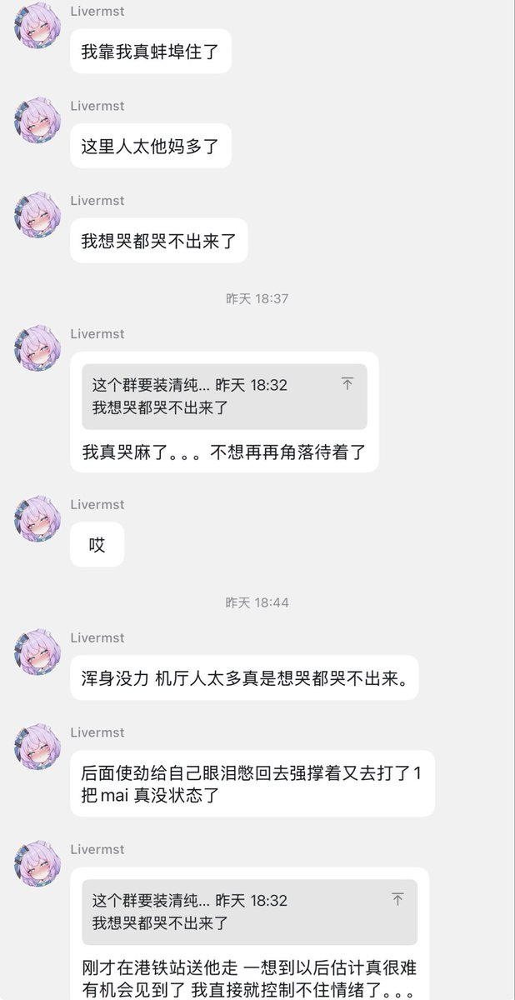
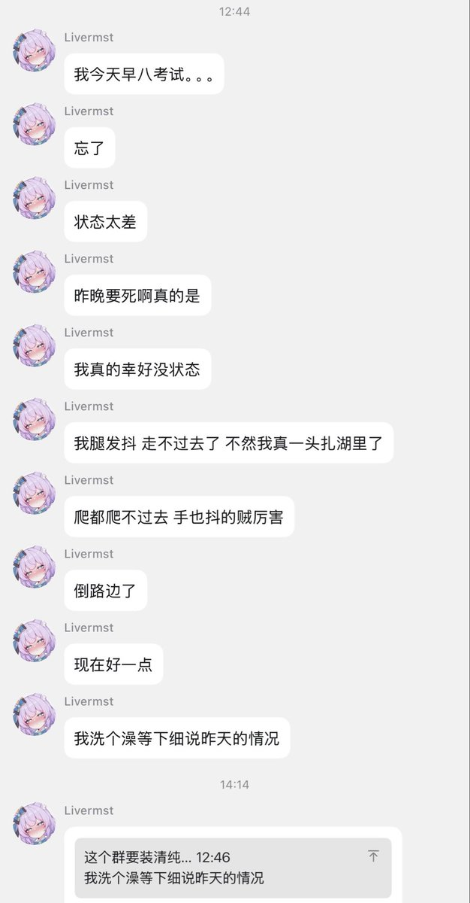
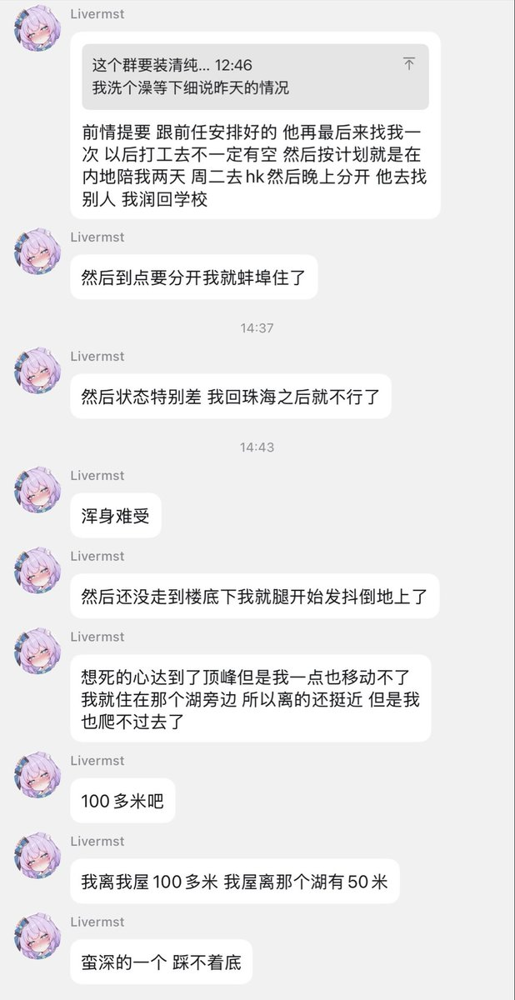
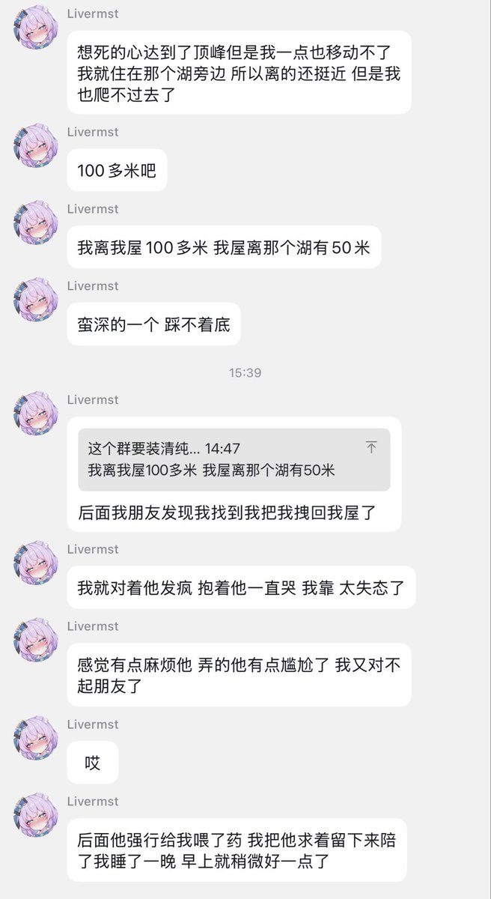

SANAKA
@Letana358121
@Liver_MST （hug）




Livermst
@Liver_MST
昨天和今天做了很多对不起朋友、麻烦朋友的事，在墙内发了许多阴暗的话，我自裁。
实际上我很怕自己死掉，往好了想，我还有未尽之事，还在意朋友的感受，还有求生欲望。虽然我懒，也不想麻烦别人，但至少我在难熬的时候还是做得到寻求他人的帮助的。
我会在这段定好的时间内好好活着的，请大家放心哦。 https://t.co/npOnOORmhQ